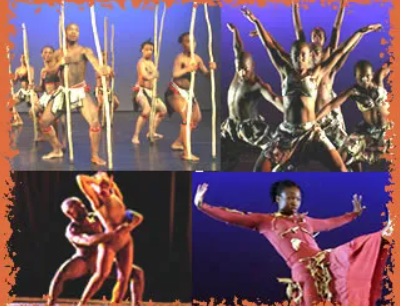

assiste mais um video de forró
assite um video de zumba
assiste video de dança de africana
assiste video de balé
assiste video de dança
assiste esse video de dança de salão
 "
"A dança nasceu com os primeiros seres humanos. Através do movimento do corpo, da batida do coração, do caminhar, os seres humanos criaram a dança como forma de expressão. Por meio das pinturas encontradas nas cavernas, sabemos que homens e mulheres já dançavam desde a pré-história.
A dança é uma expressão artística que usa o corpo como instrumento. Assim como o pintor utiliza pincéis e tela para criar seus quadros, o bailarino serve-se do próprio corpo. Presente em todos os povos e culturas, a dança pode ser executada em grupo, duplas ou solos. Pela dança se expressa a alegria, a tristeza, o amor e outros sentimentos humanos.
Chamamos dança primitiva aquela que surge de maneira espontânea, sendo praticada por uma comunidade. Geralmente, é uma dança usada para celebrar um ritual específico como as colheitas ou a chegada de uma estação do ano.Nas culturas indígenas, é usada em festas ou a fim de se preparar para a guerra. Também é utilizada nos rituais de passagem, como o início da vida adulta.
Nas civilizações antigas, como a egípcia ou a mesopotâmica, a dança tinha um caráter sagrado, sendo mais uma forma de honrar os deuses. Esse tipo de dança sobrevive até hoje em países como Índia e Japão.
Na Grécia antiga, a dança também tinha um caráter ritual, sendo usada nos cultos aos deuses. Uma das danças mais descritas na Antiguidade era a que se realizava nas festas do Minotauro ou do deus do vinho, Baco.
Quanto ao modo de dançar:
DAnça solo (ex.: coreografia de solista no balé, sapateado, samba);
dança em dupla (ex.: tango, ,kizomba, valsa, forró, etc.); DANça em grupo (ex.: danças de roda, sapateado, gavota).Quanto a origem:
dança folclórica (ex.: catira, carimbó, reisado, etc.);
dança histórica (ex.: sarabanda, bourré, gavota, etc.);
dança cerimonial (ex.: danças rituais indianas);
dança étnica (ex.: danças tradicionais de países ou regiões).
Quanto a finalidade:
ça erótica (ex.: can can, striptease);
dança cênica ou performática (ex.: balé, dança do ventre, sapateado, dança contemporânea);
dança social (ex.: dança de salão, axé music, tradicional);
ça religiosa/dança profética (ex.: dança sufi); dança coreografada (ex.: Casamento, Debutantes, Bodas), etc.
| historia de dança | tipos de dança | aulas de dança |
|---|---|---|
| funk | forró | sertanejo |
| " | " | " |